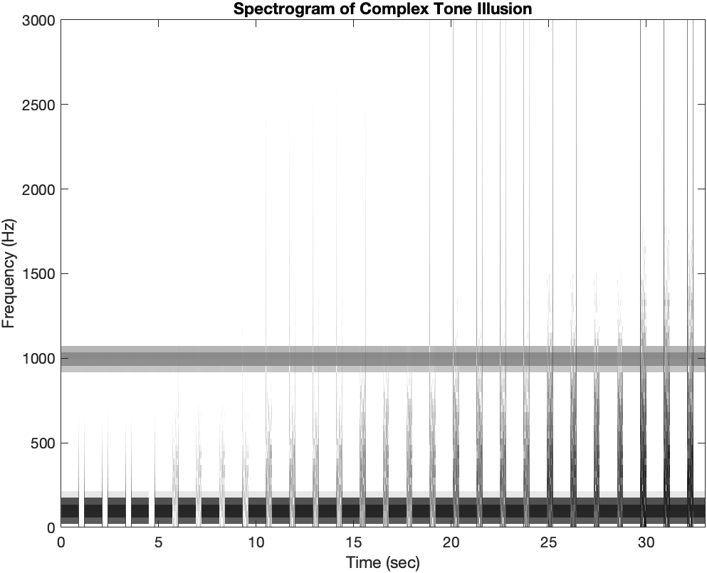

The Question.
Does grouping in a complex tone increase the continuity effect of a masking noise?
Exploring continuity.
By Nicole Dundas and Skylar Gordon
Does grouping in a complex tone increase the continuity effect of a masking noise?
A complex tone made of one low tone of 100Hz and one high tone of 1000Hz is masked by a low pass noise of 500Hz. The noise that fills the gap in the low tone component begins at .001 amplitude. After each group of cycles, the noise is increased in intensity. Its RMS are .001, .025, .05, .1, .2, .5 and 1. The complex tone plays for 900 ms and the noise plus the high tone component of the complex tone plays for 100 ms in between.
In comparing the thresholds of when you hear continuity of the low pure tone control versus the complex tone, we found that the complex tone is filled in over the masking noise earlier than the pure tone alone.
This observation demonstrates that the grouping with the high frequency part of the tone could lead the brain to infer that the low tone also continued playing through the noise.
Warning: May get loud- Do NOT listen with headphones!.
Citation: Warren, R. M., Obusek, C. J., & Ackroff, J. M. (1972). Auditory Induction: Perceptual Synthesis of Absent Sounds. Science, 176(4039), 1149–1151. https://doi.org/10.1126/science.176.4039.1149.